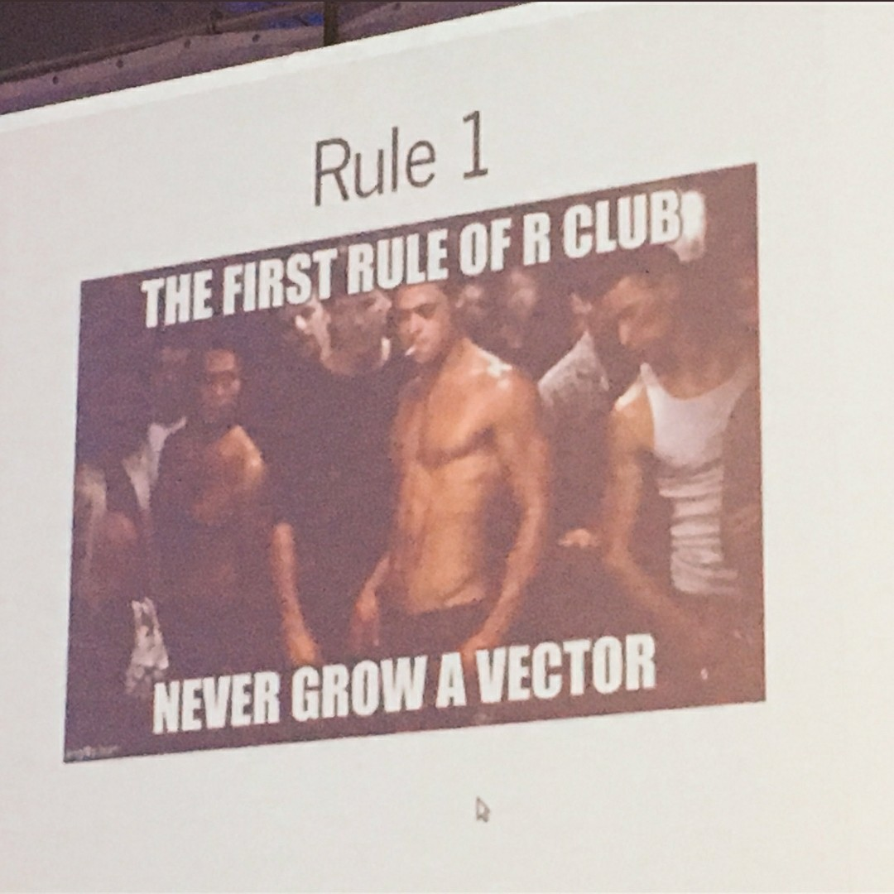

Programando com dados
Fernando P. Mayer
1 Introdução
Por quê programar?
- Evitar repetições desnecessárias de análises ou cálculos que são repetidos com frequência.
- Fica documentado as etapas que você realizou para chegar a um resultado.
- Fácil recuperação e modificação de programas.
Como programar?
- Criando programas! (Scripts, rotinas, algoritmos).
- Crie uma sequência lógica de comandos que devem ser executados em ordem.
- Utilize as ferramentas básicas da programação: estruturas de repetição (
for()) e estruturas de seleção (if()).
2 Estrutura de repetição for()
Serve para repetir um ou mais comandos diversas vezes. Para ver como funciona, considere o seguinte exemplo:
for(i in 1:10){
print(i)
}
# [1] 1
# [1] 2
# [1] 3
# [1] 4
# [1] 5
# [1] 6
# [1] 7
# [1] 8
# [1] 9
# [1] 10O resultado é a chamada do comando print() para cada valor que o índice i recebe (nesse caso i recebe os valores de 1 a 10).
A sintaxe será sempre nesse formato:
Veja outro exemplo em como podemos aplicar o índice:
x <- 100:200
for(j in 1:10){
print(x[j])
}
# [1] 100
# [1] 101
# [1] 102
# [1] 103
# [1] 104
# [1] 105
# [1] 106
# [1] 107
# [1] 108
# [1] 109Veja que o índice não precisa ser i, na verdade pode ser qualquer letra ou palavra. Nesse caso, veja que utilizamos os valores como índice para selecionar elementos de x naquelas posições específicas.
Um outro exemplo seria se quisessemos imprimir o quadrado de alguns números (não necessariamente em sequência):
Ou mesmo imprimir caracteres a partir de um vetor de caracteres:
for(veiculos in c("carro", "ônibus", "trem", "bicicleta")){
print(veiculos)
}
# [1] "carro"
# [1] "ônibus"
# [1] "trem"
# [1] "bicicleta"Exemplo: cálculo de notas de uma disciplina.
## Importa os dados
url <- "http://leg.ufpr.br/~fernandomayer/data/notas.csv"
notas <- read.table(url, header = TRUE, sep = ";", dec = ",")## Analisa a estrutura dos dados
str(notas)
# 'data.frame': 30 obs. of 4 variables:
# $ nome : Factor w/ 30 levels "Aluno_1","Aluno_10",..: 1 12 23 25 26 27 28 29 30 2 ...
# $ prova1: int 8 2 9 1 7 10 1 5 5 10 ...
# $ prova2: int 4 7 2 10 6 0 8 9 6 2 ...
# $ prova3: int 1 6 4 9 8 3 0 7 1 3 ...
head(notas)
# nome prova1 prova2 prova3
# 1 Aluno_1 8 4 1
# 2 Aluno_2 2 7 6
# 3 Aluno_3 9 2 4
# 4 Aluno_4 1 10 9
# 5 Aluno_5 7 6 8
# 6 Aluno_6 10 0 3
summary(notas)
# nome prova1 prova2 prova3
# Aluno_1 : 1 Min. : 0.000 Min. : 0.000 Min. :0.0
# Aluno_10: 1 1st Qu.: 2.000 1st Qu.: 3.000 1st Qu.:3.0
# Aluno_11: 1 Median : 4.000 Median : 6.000 Median :6.5
# Aluno_12: 1 Mean : 4.433 Mean : 5.433 Mean :5.4
# Aluno_13: 1 3rd Qu.: 6.750 3rd Qu.: 8.000 3rd Qu.:8.0
# Aluno_14: 1 Max. :10.000 Max. :10.000 Max. :9.0
# (Other) :24Antes de seguir adiante, veja o resultado de
## for(i in 1:30){
## print(notas[i, c("prova1", "prova2", "prova3")])
## }
notas[1, c("prova1", "prova2", "prova3")]
# prova1 prova2 prova3
# 1 8 4 1
class(notas[1, c("prova1", "prova2", "prova3")])
# [1] "data.frame"
as.numeric(notas[1, c("prova1", "prova2", "prova3")])
# [1] 8 4 1
class(as.numeric(notas[1, c("prova1", "prova2", "prova3")]))
# [1] "numeric"Para calcular as médias das 3 provas, precisamos inicialmente de um vetor para armazenar os resultados. Esse vetor pode ser um novo objeto ou uma nova coluna no dataframe
## Aqui vamos criar uma nova coluna no dataframe, contendo apenas o
## valor 0
notas$media <- 0 # note que aqui será usada a regra da reciclagem, ou
# seja, o valor zero será repetido até completar todas
# as linhas do dataframe
## Estrutura de repetição para calcular a média
for(i in 1:30){
## Aqui, cada linha i da coluna media sera substituida pelo
## respectivo valor da media caculada
notas$media[i] <- sum(notas[i, c("prova1", "prova2", "prova3")])/3
}
## Confere os resultados
head(notas)
# nome prova1 prova2 prova3 media
# 1 Aluno_1 8 4 1 4.333333
# 2 Aluno_2 2 7 6 5.000000
# 3 Aluno_3 9 2 4 5.000000
# 4 Aluno_4 1 10 9 6.666667
# 5 Aluno_5 7 6 8 7.000000
# 6 Aluno_6 10 0 3 4.333333Agora podemos melhorar o código, tornando-o mais genérico. Dessa forma fica mais fácil fazer alterações e procurar erros. Uma forma de melhorar o código acima é generalizando alguns passos.
## Armazenamos o número de linhas no dataframe
nlinhas <- nrow(notas)
## Identificamos as colunas de interesse no cálculo da média, e
## armazenamos em um objeto separado
provas <- c("prova1", "prova2", "prova3")
## Sabendo o número de provas, fica mais fácil dividir pelo total no
## cálculo da média
nprovas <- length(provas)
## Cria uma nova coluna apenas para comparar o cálculo com o anterior
notas$media2 <- 0
## A estrutura de repetição fica
for(i in 1:nlinhas){
notas$media2[i] <- sum(notas[i, provas])/nprovas
}
## Confere
head(notas)
# nome prova1 prova2 prova3 media media2
# 1 Aluno_1 8 4 1 4.333333 4.333333
# 2 Aluno_2 2 7 6 5.000000 5.000000
# 3 Aluno_3 9 2 4 5.000000 5.000000
# 4 Aluno_4 1 10 9 6.666667 6.666667
# 5 Aluno_5 7 6 8 7.000000 7.000000
# 6 Aluno_6 10 0 3 4.333333 4.333333
identical(notas$media, notas$media2)
# [1] TRUEAinda podemos melhorar (leia-se: otimizar) o código, se utilizarmos funções prontas do R. No caso da média isso é possível pois a função mean() já existe. Em seguida veremos como fazer quando o cálculo que estamos utilizando não está implementado em nenhuma função pronta do R.
## Cria uma nova coluna apenas para comparação
notas$media3 <- 0
## A estrutura de repetição fica
for(i in 1:nlinhas){
notas$media3[i] <- mean(as.numeric(notas[i, provas]))
}
## Confere
head(notas)
# nome prova1 prova2 prova3 media media2 media3
# 1 Aluno_1 8 4 1 4.333333 4.333333 4.333333
# 2 Aluno_2 2 7 6 5.000000 5.000000 5.000000
# 3 Aluno_3 9 2 4 5.000000 5.000000 5.000000
# 4 Aluno_4 1 10 9 6.666667 6.666667 6.666667
# 5 Aluno_5 7 6 8 7.000000 7.000000 7.000000
# 6 Aluno_6 10 0 3 4.333333 4.333333 4.333333
## A única diferença é que aqui precisamos transformar cada linha em um
## vetor de números com as.numeric(), pois
notas[1, provas]
# prova1 prova2 prova3
# 1 8 4 1
## é um data.frame:
class(notas[1, provas])
# [1] "data.frame"No caso acima vimos que não era necessário calcular a média através de soma/total porque existe uma função pronta no R para fazer esse cálculo. Mas, e se quisessemos, por exemplo, calcular a Coeficiente de Variação (CV) entre as notas das três provas de cada aluno? Uma busca por
não retorna nenhuma função (dos pacotes básicos) para fazer esse cálculo. O motivo é simples: como é uma conta simples de fazer não há necessidade de se criar uma função extra dentro dos pacotes. No entanto, nós podemos criar uma função que calcule o CV, e usá-la para o nosso propósito
NOTA: na função criada acima o único argumento que usamos foi x, que neste caso deve ser um vetor de números para o cálculo do CV. Os argumentos colocados dentro de function() devem ser apropriados para o propósito de cada função.
Antes de aplicar a função dentro de um for() devemos testá-la para ver se ela está funcioanando de maneira correta. Por exemplo, o CV para as notas do primeiro aluno pode ser calculado “manualmente” por
E através da função, o resultado é
o que mostra que a função está funcionando corretamente, e podemos aplicá-la em todas as linhas usando a repetição
## Cria uma nova coluna para o CV
notas$CV <- 0
## A estrutura de repetição fica
for(i in 1:nlinhas){
notas$CV[i] <- cv(as.numeric(notas[i, provas]))
}
## Confere
head(notas)
# nome prova1 prova2 prova3 media media2 media3 CV
# 1 Aluno_1 8 4 1 4.333333 4.333333 4.333333 0.8104349
# 2 Aluno_2 2 7 6 5.000000 5.000000 5.000000 0.5291503
# 3 Aluno_3 9 2 4 5.000000 5.000000 5.000000 0.7211103
# 4 Aluno_4 1 10 9 6.666667 6.666667 6.666667 0.7399324
# 5 Aluno_5 7 6 8 7.000000 7.000000 7.000000 0.1428571
# 6 Aluno_6 10 0 3 4.333333 4.333333 4.333333 1.1842157Podemos agora querer calcular as médias ponderadas para as provas. Por exemplo:
- Prova 1: peso 3
- Prova 2: peso 3
- Prova 3: peso 4
Usando a fórmula:
\[ \bar{x} = \frac{1}{N} \sum_{i=1}^{n} x_i \cdot w_i \]
onde \(w_i\) são os pesos, e \(N = \sum_{i=1}^{n} w_i\) é a soma dos pesos. Como já vimos que criar uma função é uma forma mais prática (e elegante) de executar determinada tarefa, vamos criar uma função que calcule as médias ponderadas.
med.pond <- function(notas, pesos){
## Multiplica o valor de cada prova pelo seu peso
pond <- notas * pesos
## Calcula o valor total dos pesos
peso.total <- sum(pesos)
## Calcula a soma da ponderação
sum.pond <- sum(pond)
## Finalmente calcula a média ponderada
saida <- sum.pond/peso.total
return(saida)
}Antes de aplicar a função para o caso geral, sempre é importante testar e conferir o resultado em um caso menor. Podemos verificar o resultado da média ponderada para o primeiro aluno
e testar a função para o mesmo caso
Como o resultado é o mesmo podemos aplicar a função para todas as linhas através do for()
## Cria uma nova coluna para a média ponderada
notas$MP <- 0
## A estrutura de repetição fica
for(i in 1:nlinhas){
notas$MP[i] <- med.pond(notas = notas[i, provas], pesos = c(3, 3, 4))
}
## Confere
head(notas)
# nome prova1 prova2 prova3 media media2 media3 CV MP
# 1 Aluno_1 8 4 1 4.333333 4.333333 4.333333 0.8104349 4.0
# 2 Aluno_2 2 7 6 5.000000 5.000000 5.000000 0.5291503 5.1
# 3 Aluno_3 9 2 4 5.000000 5.000000 5.000000 0.7211103 4.9
# 4 Aluno_4 1 10 9 6.666667 6.666667 6.666667 0.7399324 6.9
# 5 Aluno_5 7 6 8 7.000000 7.000000 7.000000 0.1428571 7.1
# 6 Aluno_6 10 0 3 4.333333 4.333333 4.333333 1.1842157 4.2NOTA: uma função para calcular a média ponderada já existe implementada no R. Veja ?weighted.mean() e confira os resultados obtidos aqui
Repare na construção da função acima: agora usamos dois argumentos, notas e pesos, pois precisamos dos doiss vetores para calcular a média ponderada. Repare também que ambos argumentos não possuem um valor padrão. Poderíamos, por exemplo, assumir valores padrão para os pesos, e deixar para que o usuário mude apenas se achar necessário.
## Atribuindo pesos iguais para as provas como padrão
med.pond <- function(notas, pesos = rep(1, length(notas))){
## Multiplica o valor de cada prova pelo seu peso
pond <- notas * pesos
## Calcula o valor total dos pesos
peso.total <- sum(pesos)
## Calcula a soma da ponderação
sum.pond <- sum(pond)
## Finalmente calcula a média ponderada
saida <- sum.pond/peso.total
return(saida)
}Repare que neste caso, como os pesos são iguais, a chamada da função sem alterar o argumento pesos gera o mesmo resultado do cálculo da média comum.
## Cria uma nova coluna para a média ponderada para comparação
notas$MP2 <- 0
## A estrutura de repetição fica
for(i in 1:nlinhas){
notas$MP2[i] <- med.pond(notas = notas[i, provas])
}
## Confere
head(notas)
# nome prova1 prova2 prova3 media media2 media3 CV MP
# 1 Aluno_1 8 4 1 4.333333 4.333333 4.333333 0.8104349 4.0
# 2 Aluno_2 2 7 6 5.000000 5.000000 5.000000 0.5291503 5.1
# 3 Aluno_3 9 2 4 5.000000 5.000000 5.000000 0.7211103 4.9
# 4 Aluno_4 1 10 9 6.666667 6.666667 6.666667 0.7399324 6.9
# 5 Aluno_5 7 6 8 7.000000 7.000000 7.000000 0.1428571 7.1
# 6 Aluno_6 10 0 3 4.333333 4.333333 4.333333 1.1842157 4.2
# MP2
# 1 4.333333
# 2 5.000000
# 3 5.000000
# 4 6.666667
# 5 7.000000
# 6 4.3333333 Estrutura de seleção if()
Uma estrutura de seleção serve para executar algum comando apenas se alguma condição (em forma de expressão condicional) seja satisfeita. Geralmente é utilizada dentro de um for().
No exemplo inicial poderíamos querer imprimir um resultado caso satisfaça determinada condição. Por exemplo, se o valor de x for menor ou igual a 105, então imprima um texto informando isso.
x <- 100:200
for(j in 1:10){
if(x[j] <= 105){
print("Menor ou igual a 105")
}
}
# [1] "Menor ou igual a 105"
# [1] "Menor ou igual a 105"
# [1] "Menor ou igual a 105"
# [1] "Menor ou igual a 105"
# [1] "Menor ou igual a 105"
# [1] "Menor ou igual a 105"Mas também podemos considerar o que aconteceria caso contrário. Por exemplo, se o valor de xfor maior do que 105, então imprima outro texto.
x <- 100:200
for(j in 1:10){
if(x[j] <= 105){
print("Menor ou igual a 105")
} else{
print("Maior do que 105")
}
}
# [1] "Menor ou igual a 105"
# [1] "Menor ou igual a 105"
# [1] "Menor ou igual a 105"
# [1] "Menor ou igual a 105"
# [1] "Menor ou igual a 105"
# [1] "Menor ou igual a 105"
# [1] "Maior do que 105"
# [1] "Maior do que 105"
# [1] "Maior do que 105"
# [1] "Maior do que 105"A sintaxe será sempre no formato:
if(<condição>){
<comandos que satisfazem a condição>
} else{
<comandos que não satisfazem a condição>
}Como vimos acima, a especificação do else{} não é obrigatória.
Voltando ao exemplo das notas, podemos adicionar uma coluna com a condição do aluno: aprovado ou reprovado de acordo com a sua nota. Para isso precisamos criar uma condição (nesse caso se a nota é maior do que 7), e verificar se ela é verdadeira.
## Nova coluna para armazenar a situacao
notas$situacao <- NA # aqui usamos NA porque o resultado será um
# caracter
## Estrutura de repetição
for(i in 1:nlinhas){
## Estrutura de seleção (usando a média ponderada)
if(notas$MP[i] >= 7){
notas$situacao[i] <- "aprovado"
} else{
notas$situacao[i] <- "reprovado"
}
}
## Confere
head(notas)
# nome prova1 prova2 prova3 media media2 media3 CV MP
# 1 Aluno_1 8 4 1 4.333333 4.333333 4.333333 0.8104349 4.0
# 2 Aluno_2 2 7 6 5.000000 5.000000 5.000000 0.5291503 5.1
# 3 Aluno_3 9 2 4 5.000000 5.000000 5.000000 0.7211103 4.9
# 4 Aluno_4 1 10 9 6.666667 6.666667 6.666667 0.7399324 6.9
# 5 Aluno_5 7 6 8 7.000000 7.000000 7.000000 0.1428571 7.1
# 6 Aluno_6 10 0 3 4.333333 4.333333 4.333333 1.1842157 4.2
# MP2 situacao
# 1 4.333333 reprovado
# 2 5.000000 reprovado
# 3 5.000000 reprovado
# 4 6.666667 reprovado
# 5 7.000000 aprovado
# 6 4.333333 reprovado4 O modo do R: vetorização
As funções vetorizadas do R, além de facilitar e resumir a execução de tarefas repetitivas, também são computacionalmente mais eficientes, i.e. o tempo de execução das rotinas é muito mais rápido.
Já vimos que a regra da reciclagem é uma forma de vetorizar cálculos no R. Os cálculos feitos com funções vetorizadas (ou usando a regra de reciclagem) são muito mais eficientes (e preferíveis) no R. Por exemplo, podemos criar um vetor muito grande de números e querer calcular o quadrado de cada número. Se pensássemos em usar uma estrutura de repetição, o cálculo seria o seguinte:
## Vetor com uma sequência de 1 a 1.000.000
x <- 1:1000000
## Calcula o quadrado de cada número da sequência em x usando for()
y1 <- numeric(length(x)) # vetor de mesmo comprimento de x que vai
# receber os resultados
for(i in 1:length(x)){
y1[i] <- x[i]^2
}Mas, da forma vetorial e usando a regra da reciclagem, a mesma operação pode ser feita apenas com
## Calcula o quadrado de cada número da sequência em x usando a regra da
## reciclagem
y2 <- x^2
## Confere os resultados
identical(y1, y2)
# [1] TRUENote que os resultados são exatamente iguais, mas então porque se prefere o formato vetorial? Primeiro porque é muito mais simples de escrever, e segundo (e principalmente) porque a forma vetorizada é muito mais eficiente computacionalmente. A eficiência computacional pode ser medida de várias formas (alocação de memória, tempo de execução, etc), mas apenas para comparação, vamos medir o tempo de execução destas mesmas operações usando o for() e usando a regra da reciclagem.
## Tempo de execução usando for()
y1 <- numeric(length(x))
st1 <- system.time(
for(i in 1:length(x)){
y1[i] <- x[i]^2
}
)
st1
# user system elapsed
# 0.080 0.000 0.079
## Tempo de execução usando a regra da reciclagem
st2 <- system.time(
y2 <- x^2
)
st2
# user system elapsed
# 0.002 0.000 0.003Olhando o resultado de elapsed, que é o tempo total de execução de uma função medido por system.time(), notamos que usando a regra da reciclagem, o cálculo é aproximadamente 0.079/0.003 = 26.33 vezes mais rápido. Claramente esse é só um exemplo de um cálculo muito simples. Mas em situações mais complexas, a diferença entro o tempo de execução das duas formas pode ser muito maior.
Existem duas formas básicas de tornar um loop for no R mais rápido:
- Faça o máximo possível fora do loop
- Crie um objeto com tamanho suficiente para armazenar todos os resultados do loop antes de executá-lo
Veja este exemplo:
## Vetor com uma sequência de 1 a 1.000.000
x <- 1:1000000
## Cria um objeto de armazenamento com o mesmo tamanho do resultado
st1 <- system.time({
out1 <- numeric(length(x))
for(i in 1:length(x)){
out1[i] <- x[i]^2
}
})
## Cria um objeto de tamanho "zero" e vai "crescendo" esse vetor
st2 <- system.time({
out2 <- numeric(0)
for(i in 1:length(x)){
out2[i] <- x[i]^2
}
})
## Cria um objeto de tamanho "zero" e cresce o vetor usando a função c()
## NUNCA faça isso!!
st3 <- system.time({
out3 <- numeric(0)
for(i in 1:length(x)){
out3 <- c(out3, x[i]^2)
}
})Veja que os objetos criados são de fato idênticos, mas os tempos de execução são bem diferentes
identical(out1, out2, out3)
# [1] TRUE
rbind(st1, st2, st3)[,1:3]
# user.self sys.self elapsed
# st1 0.071 0.003 0.074
# st2 0.255 0.016 0.272
# st3 1179.823 147.493 1330.463Essa simples diferença gera um aumento de tempo de execução da segunda forma, em relação à primeira, de aproximadamente 0.272/0.074 = 3.68 vezes. Já utilizando a terceira forma, “crescendo” o vetor com a função c(), o aumento de tempo (em relação ao primeiro) é de aproximadamente 1330.463/0.074 = 17979 vezes! Isso acontece porque o vetor out precisa ter seu tamanho aumentado com um elemento a cada iteração. Para fazer isso, o R precisa encontrar um espaço na memória que possa armazenar o objeto maior. É necessário então copiar o vetor de saída e apagar sua versão anterior antes de seguir para o próximo loop. Ao final, foi necessário escrever um milhão de vezes na memória do computador.
Já no primeiro caso, o tamanho do vetor de armazenamento nunca muda, e a memória para esse vetor já foi alocada previamente, de uma única vez.

Voltando ao exemplo das notas, por exemplo, o cálculo da média simples poderia ser feita diretamente com a função apply()
notas$media.apply <- apply(X = notas[, provas], MARGIN = 1, FUN = mean)
head(notas)
# nome prova1 prova2 prova3 media media2 media3 CV MP
# 1 Aluno_1 8 4 1 4.333333 4.333333 4.333333 0.8104349 4.0
# 2 Aluno_2 2 7 6 5.000000 5.000000 5.000000 0.5291503 5.1
# 3 Aluno_3 9 2 4 5.000000 5.000000 5.000000 0.7211103 4.9
# 4 Aluno_4 1 10 9 6.666667 6.666667 6.666667 0.7399324 6.9
# 5 Aluno_5 7 6 8 7.000000 7.000000 7.000000 0.1428571 7.1
# 6 Aluno_6 10 0 3 4.333333 4.333333 4.333333 1.1842157 4.2
# MP2 situacao media.apply
# 1 4.333333 reprovado 4.333333
# 2 5.000000 reprovado 5.000000
# 3 5.000000 reprovado 5.000000
# 4 6.666667 reprovado 6.666667
# 5 7.000000 aprovado 7.000000
# 6 4.333333 reprovado 4.333333As médias ponderadas poderiam ser calculadas da mesma forma, e usando a função que criamos anteriormente
notas$MP.apply <- apply(X = notas[, provas], MARGIN = 1, FUN = med.pond)
head(notas)
# nome prova1 prova2 prova3 media media2 media3 CV MP
# 1 Aluno_1 8 4 1 4.333333 4.333333 4.333333 0.8104349 4.0
# 2 Aluno_2 2 7 6 5.000000 5.000000 5.000000 0.5291503 5.1
# 3 Aluno_3 9 2 4 5.000000 5.000000 5.000000 0.7211103 4.9
# 4 Aluno_4 1 10 9 6.666667 6.666667 6.666667 0.7399324 6.9
# 5 Aluno_5 7 6 8 7.000000 7.000000 7.000000 0.1428571 7.1
# 6 Aluno_6 10 0 3 4.333333 4.333333 4.333333 1.1842157 4.2
# MP2 situacao media.apply MP.apply
# 1 4.333333 reprovado 4.333333 4.333333
# 2 5.000000 reprovado 5.000000 5.000000
# 3 5.000000 reprovado 5.000000 5.000000
# 4 6.666667 reprovado 6.666667 6.666667
# 5 7.000000 aprovado 7.000000 7.000000
# 6 4.333333 reprovado 4.333333 4.333333Mas note que como temos o argumento pesos especificado com um padrão, devemos alterar na própria função apply()
notas$MP.apply <- apply(X = notas[, provas], MARGIN = 1,
FUN = med.pond, pesos = c(3, 3, 4))
head(notas)
# nome prova1 prova2 prova3 media media2 media3 CV MP
# 1 Aluno_1 8 4 1 4.333333 4.333333 4.333333 0.8104349 4.0
# 2 Aluno_2 2 7 6 5.000000 5.000000 5.000000 0.5291503 5.1
# 3 Aluno_3 9 2 4 5.000000 5.000000 5.000000 0.7211103 4.9
# 4 Aluno_4 1 10 9 6.666667 6.666667 6.666667 0.7399324 6.9
# 5 Aluno_5 7 6 8 7.000000 7.000000 7.000000 0.1428571 7.1
# 6 Aluno_6 10 0 3 4.333333 4.333333 4.333333 1.1842157 4.2
# MP2 situacao media.apply MP.apply
# 1 4.333333 reprovado 4.333333 4.0
# 2 5.000000 reprovado 5.000000 5.1
# 3 5.000000 reprovado 5.000000 4.9
# 4 6.666667 reprovado 6.666667 6.9
# 5 7.000000 aprovado 7.000000 7.1
# 6 4.333333 reprovado 4.333333 4.2NOTA: veja que isso é possível devido à presença do argumento ... na função apply(), que permite passar argumentos de outras funções dentro dela.
Também poderíamos usar a função weighted.mean() implementada no R
notas$MP2.apply <- apply(X = notas[, provas], MARGIN = 1,
FUN = weighted.mean, w = c(3, 3, 4))
head(notas)
# nome prova1 prova2 prova3 media media2 media3 CV MP
# 1 Aluno_1 8 4 1 4.333333 4.333333 4.333333 0.8104349 4.0
# 2 Aluno_2 2 7 6 5.000000 5.000000 5.000000 0.5291503 5.1
# 3 Aluno_3 9 2 4 5.000000 5.000000 5.000000 0.7211103 4.9
# 4 Aluno_4 1 10 9 6.666667 6.666667 6.666667 0.7399324 6.9
# 5 Aluno_5 7 6 8 7.000000 7.000000 7.000000 0.1428571 7.1
# 6 Aluno_6 10 0 3 4.333333 4.333333 4.333333 1.1842157 4.2
# MP2 situacao media.apply MP.apply MP2.apply
# 1 4.333333 reprovado 4.333333 4.0 4.0
# 2 5.000000 reprovado 5.000000 5.1 5.1
# 3 5.000000 reprovado 5.000000 4.9 4.9
# 4 6.666667 reprovado 6.666667 6.9 6.9
# 5 7.000000 aprovado 7.000000 7.1 7.1
# 6 4.333333 reprovado 4.333333 4.2 4.2O Coeficiente de Variação poderia ser calculado usando nossa função cv()
notas$CV.apply <- apply(X = notas[, provas], MARGIN = 1, FUN = cv)
head(notas)
# nome prova1 prova2 prova3 media media2 media3 CV MP
# 1 Aluno_1 8 4 1 4.333333 4.333333 4.333333 0.8104349 4.0
# 2 Aluno_2 2 7 6 5.000000 5.000000 5.000000 0.5291503 5.1
# 3 Aluno_3 9 2 4 5.000000 5.000000 5.000000 0.7211103 4.9
# 4 Aluno_4 1 10 9 6.666667 6.666667 6.666667 0.7399324 6.9
# 5 Aluno_5 7 6 8 7.000000 7.000000 7.000000 0.1428571 7.1
# 6 Aluno_6 10 0 3 4.333333 4.333333 4.333333 1.1842157 4.2
# MP2 situacao media.apply MP.apply MP2.apply CV.apply
# 1 4.333333 reprovado 4.333333 4.0 4.0 0.8104349
# 2 5.000000 reprovado 5.000000 5.1 5.1 0.5291503
# 3 5.000000 reprovado 5.000000 4.9 4.9 0.7211103
# 4 6.666667 reprovado 6.666667 6.9 6.9 0.7399324
# 5 7.000000 aprovado 7.000000 7.1 7.1 0.1428571
# 6 4.333333 reprovado 4.333333 4.2 4.2 1.1842157Finalmente, a estrutura de repetição if() também possui uma forma vetorizada através da função ifelse(). Essa função funciona da seguinte forma:
Dessa forma, a atribuição da situação dos alunos poderia ser feita da seguinte forma:
notas$situacao2 <- ifelse(notas$MP >= 7, "aprovado", "reprovado")
head(notas)
# nome prova1 prova2 prova3 media media2 media3 CV MP
# 1 Aluno_1 8 4 1 4.333333 4.333333 4.333333 0.8104349 4.0
# 2 Aluno_2 2 7 6 5.000000 5.000000 5.000000 0.5291503 5.1
# 3 Aluno_3 9 2 4 5.000000 5.000000 5.000000 0.7211103 4.9
# 4 Aluno_4 1 10 9 6.666667 6.666667 6.666667 0.7399324 6.9
# 5 Aluno_5 7 6 8 7.000000 7.000000 7.000000 0.1428571 7.1
# 6 Aluno_6 10 0 3 4.333333 4.333333 4.333333 1.1842157 4.2
# MP2 situacao media.apply MP.apply MP2.apply CV.apply situacao2
# 1 4.333333 reprovado 4.333333 4.0 4.0 0.8104349 reprovado
# 2 5.000000 reprovado 5.000000 5.1 5.1 0.5291503 reprovado
# 3 5.000000 reprovado 5.000000 4.9 4.9 0.7211103 reprovado
# 4 6.666667 reprovado 6.666667 6.9 6.9 0.7399324 reprovado
# 5 7.000000 aprovado 7.000000 7.1 7.1 0.1428571 aprovado
# 6 4.333333 reprovado 4.333333 4.2 4.2 1.1842157 reprovado5 A família de funções *apply()
As funções da chamada família *apply() são as implementações básicas de operações vetorizadas no R. Sempre que possível é desejável utilizar estas funções no lugar das estruturas de repetição. Em qualquer situação, a performance destas funções (em tempo computacional) será sempre superior
A função apply(), como já vista acima, é capaz de fazer operações nas linhas (MARGIN = 1) e também nas colunas (MARGIN = 2).
## Médias por LINHA: média das 3 provas para cada aluno
apply(X = notas[, provas], MARGIN = 1, FUN = mean)
# [1] 4.333333 5.000000 5.000000 6.666667 7.000000 4.333333 3.000000 7.000000
# [9] 4.000000 5.000000 2.666667 4.000000 6.000000 5.666667 6.000000 4.333333
# [17] 4.666667 6.333333 5.000000 4.333333 6.333333 4.666667 3.666667 3.333333
# [25] 2.666667 7.000000 5.666667 8.000000 3.666667 7.333333
## Médias por COLUNA: média de cada uma das 3 provas para todos os
## alunos
apply(X = notas[, provas], MARGIN = 2, FUN = mean)
# prova1 prova2 prova3
# 4.433333 5.433333 5.400000As funções sapply() e lapply() são semelhantes à apply(), mas operam somente nas colunas.
## sapply simpilifica o resultado para um vetor
sapply(notas[, provas], mean)
# prova1 prova2 prova3
# 4.433333 5.433333 5.400000
## lapply retorna o resultado em formato de lista
lapply(notas[, provas], mean)
# $prova1
# [1] 4.433333
#
# $prova2
# [1] 5.433333
#
# $prova3
# [1] 5.4A função tapply() é similar às anteriores (opera somente nas colunas), mas permite separar o resultado por alguma outr variável (INDEX).
## Média da prova 1 por situação
tapply(notas$prova1, notas$situacao, mean)
# aprovado reprovado
# 5.00 4.32
## Média da prova 2 por situação
tapply(notas$prova2, notas$situacao, mean)
# aprovado reprovado
# 8.6 4.8
## Média da prova 3 por situação
tapply(notas$prova3, notas$situacao, mean)
# aprovado reprovado
# 8.20 4.84No entanto, a função tapply() aceita somente uma variável por vez. Se quisermos, por exemplo, obter a média por situação das 3 provas de uma só vez, podemos usar a função aggregate().
## Mesmo resultado da tapply, mas agora em formato de data frame
aggregate(prova1 ~ situacao, data = notas, FUN = mean)
# situacao prova1
# 1 aprovado 5.00
# 2 reprovado 4.32
aggregate(prova2 ~ situacao, data = notas, FUN = mean)
# situacao prova2
# 1 aprovado 8.6
# 2 reprovado 4.8
aggregate(prova3 ~ situacao, data = notas, FUN = mean)
# situacao prova3
# 1 aprovado 8.20
# 2 reprovado 4.84
## Mas aqui podemos passar as 3 colunas de uma vez
aggregate(cbind(prova1, prova2, prova3) ~ situacao,
data = notas, FUN = mean)
# situacao prova1 prova2 prova3
# 1 aprovado 5.00 8.6 8.20
# 2 reprovado 4.32 4.8 4.846 Outras estruturas: while e repeat
O while executa comandos enquanto uma determinada condição permanece verdadeira.
## Calcule a soma em 1,2,3... até que o soma seja maior do que 1000
n <- 0
soma <- 0
while(soma <= 1000){
n <- n + 1
soma <- soma + n
}
soma
# [1] 1035O repeat é ainda mais básico, e irá executar comandos até que você explicitamente pare a execução com o comando break.

Este conteúdo está disponível por meio da Licença Creative Commons 4.0